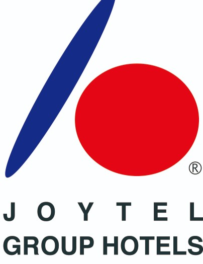

버스킹(공연)
버스킹 활동은 단순한 취미를 넘어 저의 소통 및 문제 해결 능력을 향상시키는 중요한 경험이었습니다. 다양한 관객과 직접 소통하며 유연하게 공연을 기획하고, 예상치 못한 상황에 빠르게 대처하는 능력을 길렀습니다. 이는 팀 프로젝트에서 발생하는 문제들을 효과적으로 해결하는 데에도 큰 도움이 되고 있습니다.
일본 유학 및 호텔리어 경력

2023년 7월부터 2025년 1월까지 일본에서 유학하며, 현지 호텔에서 근무했습니다. 이 경험은 저에게 기술적인 역량 외에 중요한 실무 능력을 길러주었습니다. 일본어가 모국어가 아닌 상황에서 외국인 고객 및 현지 동료들과 원활하게 소통하며, 뛰어난 의사소통 능력을 갖추게 되었습니다. 또한, 다양한 고객의 요구를 파악하고 신속하게 문제를 해결하는 과정을 통해 고객 중심의 사고방식을 내재화할 수 있었습니다. 이는 향후 사용자 중심의 앱 서비스를 기획하고 개발하는 데 있어 소중한 자산이 될 것입니다.
자격증 및 교육
- JLPT N2 (2024년 취득): 일본어 능력 시험 N2 자격을 취득하여, 비즈니스 환경에서의 일본어 소통 능력을 입증했습니다. 이는 일본어 기술 문서를 이해하고 해외 협력사와 소통하는 데 기여할 것입니다.
- NVIDIA Fundamentals of Deep Learning: 딥러닝의 핵심 개념과 최신 기술을 학습하는 과정을 성공적으로 수료했습니다. 이 교육을 통해 인공지능 분야의 기초 지식을 다지고, 향후 관련 프로젝트에 적용할 수 있는 기반을 마련했습니다.